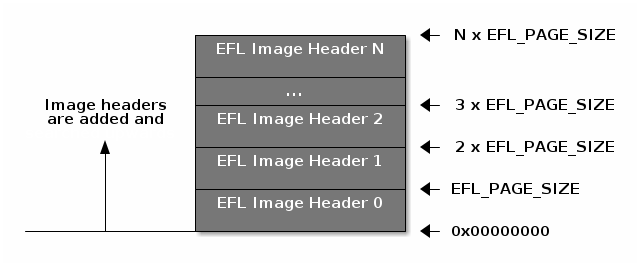

OAD External Flash Image Header¶
The OAD external flash image header is an extension of the core image header with added information that enables external flash OAD.
The external flash image header is placed in a table at the beginning of external flash and will occupy one page per entry.
The BIM will iterate through the external flash image header table to determine which image is ready to load based on the external flash image header. Once the target image is selected, the external flash image header will point to the image’s address in internal flash so that the BIM can copy the image to internal flash.
For an illustration, see the figure below, further illustration of the full external flash layout is covered in External Flash Memory Layout.

Additional Fields in External Flash Image Header¶
As mentioned above the external flash image header is an exact copy of the core image header that is part of the OAD image with the following additional fields. These fields are used by the BIM and user application.
Field |
Size (in bytes) |
Description |
|---|---|---|
External Flash Address |
4 |
Address of the image in external flash |
Counter/Timestamp |
4 |
Timestamp used by application to mark download time |
The external flash image header header structure is defined in the
ExtImageInfo_t structure within ext_flash_layout.h.